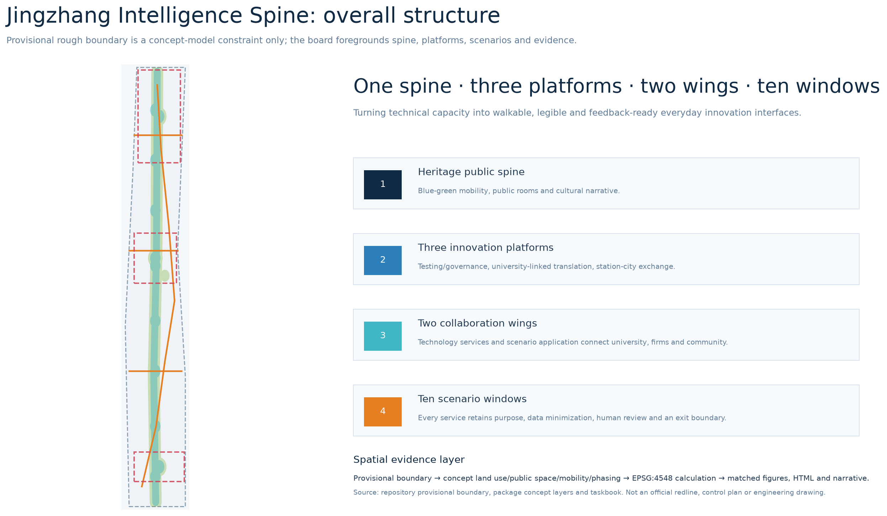
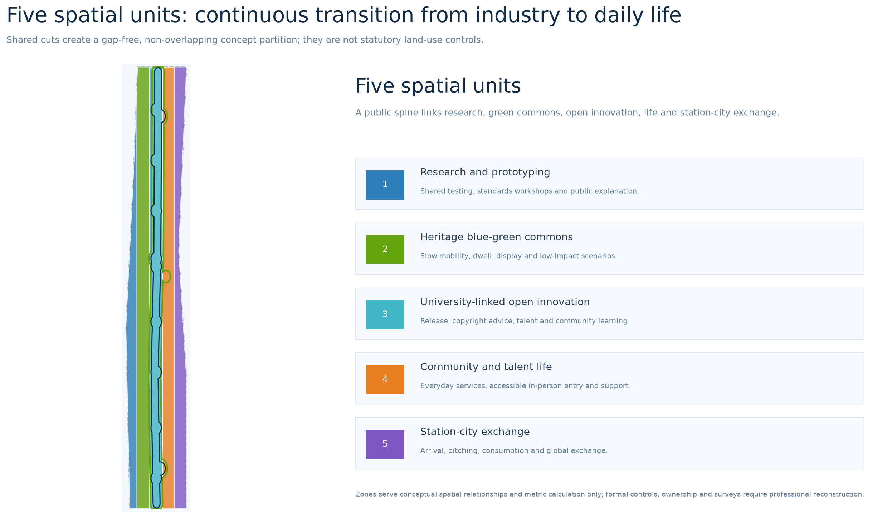
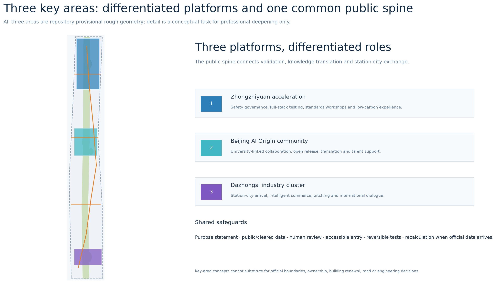
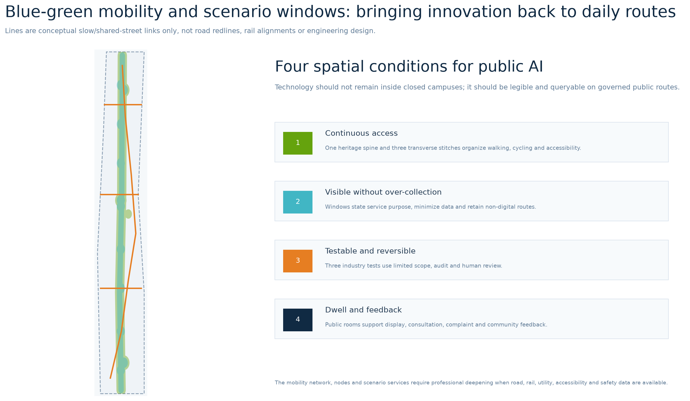
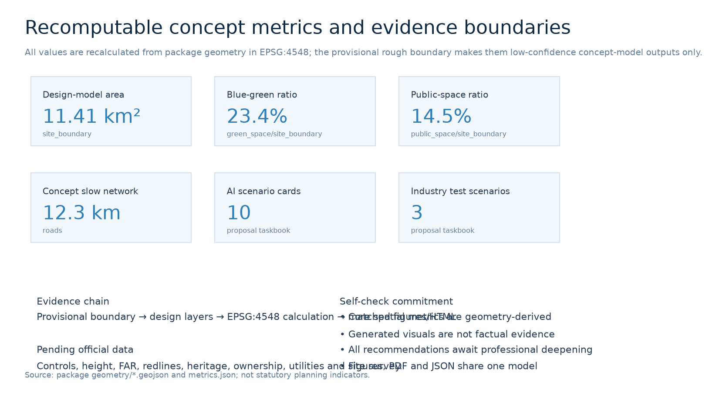

Jingzhang Intelligence Spine: Visible Public AI Innovation Belt
Concept urban design and evidence workbench under provisional-boundary conditions
Three Scope Levels
Core Metrics
AI Scenarios
Self-check Status
Overview Map

Layer illustration derived from package GeoJSON.
GPT conceptual scenes (non-evidentiary)
Four GPT images communicate spatial atmosphere and service-experience ambition only; they are not existing conditions, surveys, statutory redlines, approved renderings or engineering commitments.


Method, prompt summaries, rights and limitations are recorded in assets/media/scene-visuals-rights.md.
Land Use

Key Areas

Mobility and Walking · Blue-Green Public Space

Buildings and Renewal Projects
Concept footprints and renewal labels are options for professional deepening, not decisions about existing buildings, ownership or demolition.
AI Scenarios
Ten scenario cards each retain purpose, data minimization, human review and exit boundaries; three are limited test-validation scenarios.
Core Metrics
11.41 km² · 23.4% · 14.5%

Task Coverage
Announcement sections 1.3, 1.4 and 1.5 plus agent.1–agent.6 map to narrative, layers, metrics, PDF and this page; see compliance_matrix.json.
Self-check Status
Before submission, deterministic validation, spatial review, visual packaging and professional evidence checks will be run. PASS only supports review readiness, not approval or implementation.
Sources
Official announcement, cleared taskbook, registry, provisional geometry and the full source list are recorded in sources.json.
Assumptions
Official boundary, controls, ownership, survey, heritage and utility data trigger whole-package recalculation.